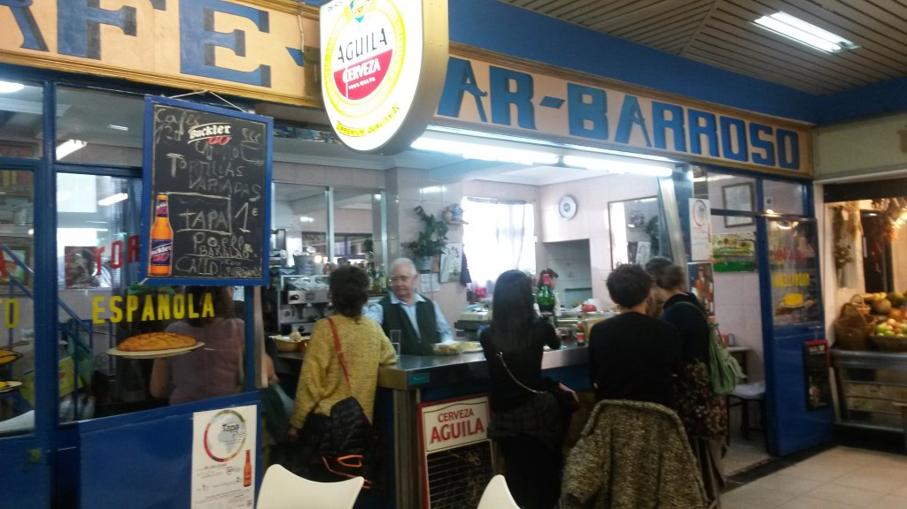

Break
This year we decided to make Drupalcamp Spain in a centric location with great transportation options where attendees can eat good food at a reasonable price. While this decision prevents us from including food as other years, we are sure that you will be satisfied.
San Fernando's Market
This nearby classic covered market, which is 7 minutes walk from La Casa Encendida, is not as turisty and full of people as other ones and it is also less pricey. The market retains part of its old style.
The market (which has existed since 1944) has a central square with several tables, and there are some 10 stalls surrounding it where you can buy traditional spanish food, greek food, japanese, asturian or andalousian, vegan, drink some tap vermouth, eat grilled meat or some chorizo, and so on, all in a young and casual atmosphere.
{kind=link}
{kind=link}
Some deals for us this weekend are:
- At "El guaje de Lavapiés" stall: potato omelette + cider bottle: 8.50€; white wine bottle +embutido: 8.50€
- At "Bosco Bistró": 2nd, 4th and 6th rounds of drink for free; 40% off at all food
- At "Don Pepito": arepas with beef or guacamole chicken: 4€ each, 4.50€ including beer
More information about the stalls here (in spanish).

How to get there
It's a 7 minutes walk. Leaving the venue, turn right at Ronda de Valencia, enter the 2nd street on the right (Calle Mesón de Paredes), and turn the 4th street on the left (Plaza de Arturo Barea). There is an entrance to the Market on the left side.
Mercado de San Fernando
Calle de Embajadores, 41, 28012 Madrid, España
La Tabacalera
This is one of the weirdest and interesting spots in Madrid. They will have food and concerts on Saturday from 1pm till late. We encourage you to stop there, eat, drink, and get lost exploring their corridors.
Other restaurants in the area
The area between Lavapiés and Huertas is one of the best areas in Madrid for lunch
- El Brillante: one of the typical restaurants to eat the typical squid sandwich
- La tragantúa: excellent quality day menu.
- Yoka Loka: one of the best Japanese in Madrid (and possibly the best chirashi) on the ground floor of the market of Anton Martin
- L'Artisan Furansu Kitchen: on the street of flavor, French-Japanese fusion cuisine with an affordable menu of the day. Try the Crême Brule is obligatory
- La Cabana Argentina: Argentine's steak. 10/10.
- Taberna del Chato: the vermouth, the partridge pate and the tartar steak are 10.
- Vinoteca Moratín: if you like good wine and meat this is your place.
- Pui Thai Tapas: if you want Thai food.
- Los Porfiados: burgers and empanadas.
- Artemisa Sun: vegan or vegetarian? One of the best in Madrid.
Drinks and dinner: Argumosa Street
This street — 5 minutes walk from La Casa Encendida — is full of bars and terraces of all kinds. Just walk the street and sit or stand where you feel comfortable: all bars in in there are good. Enjoy drinks and tapas with your Drupal friends!